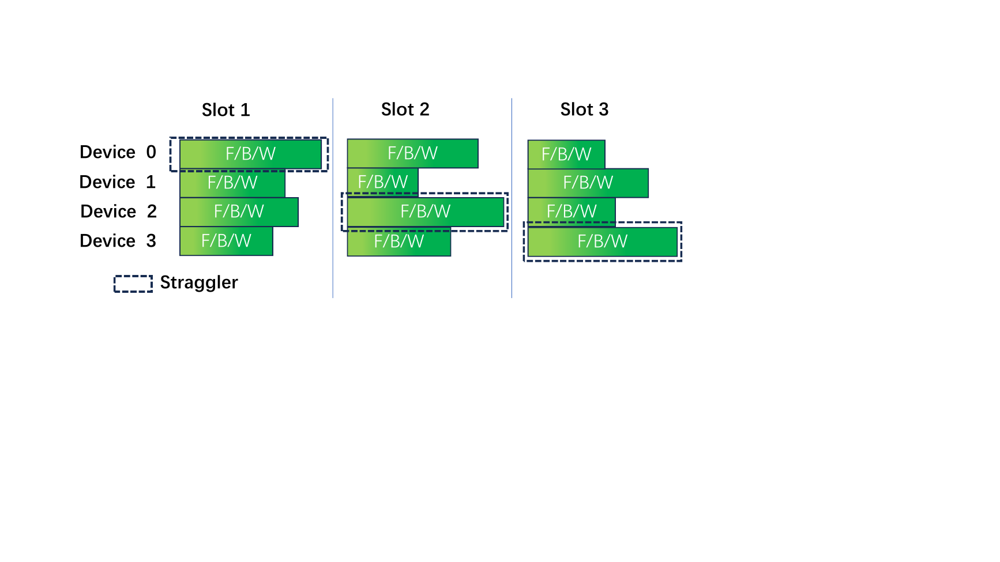
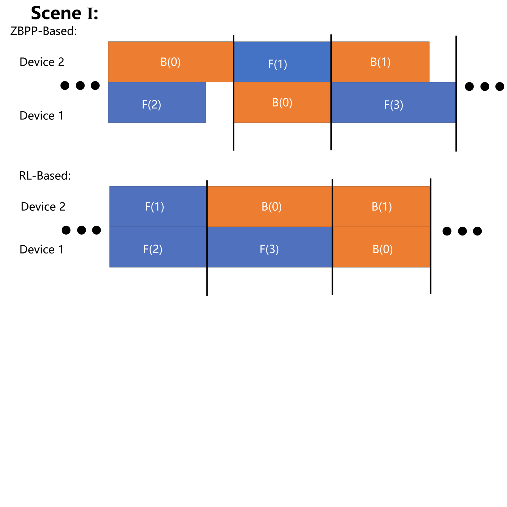
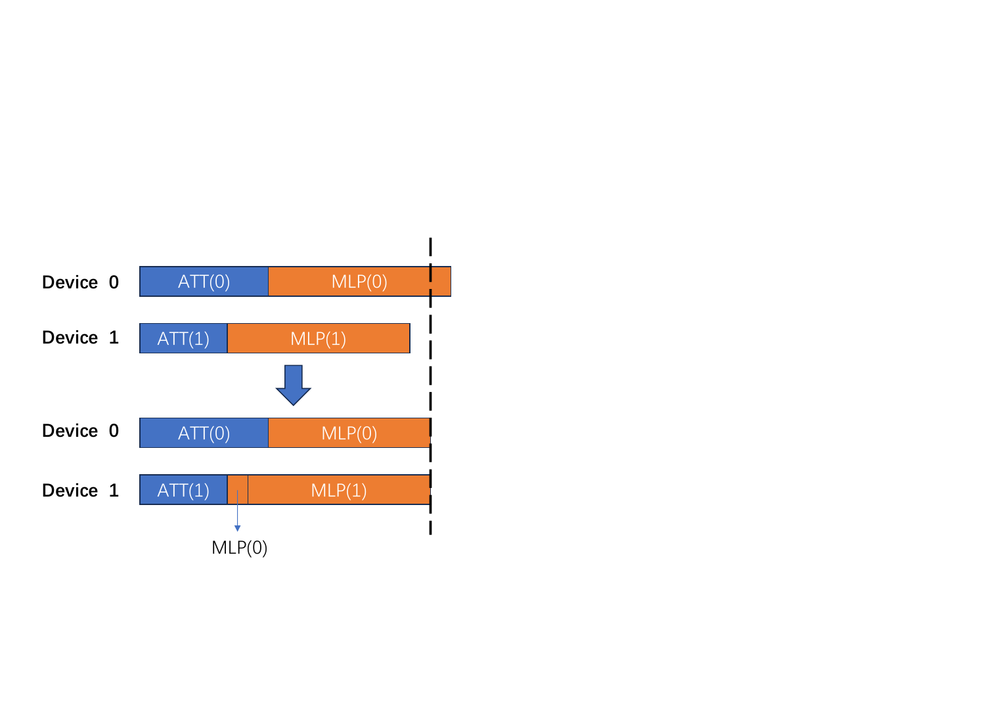
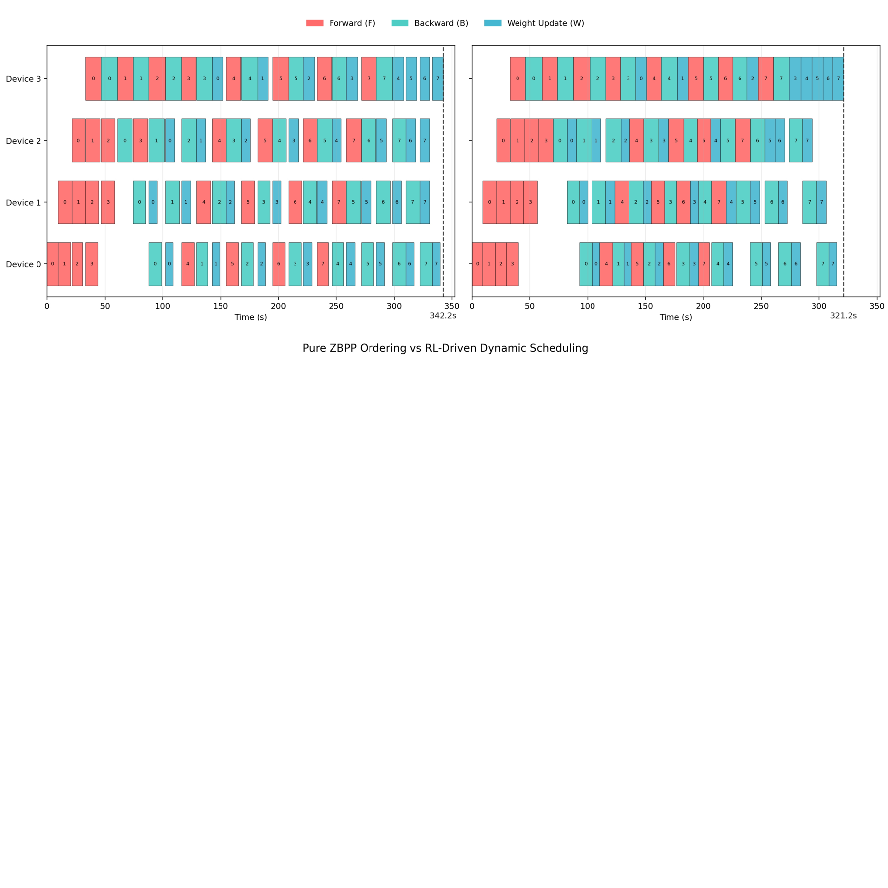
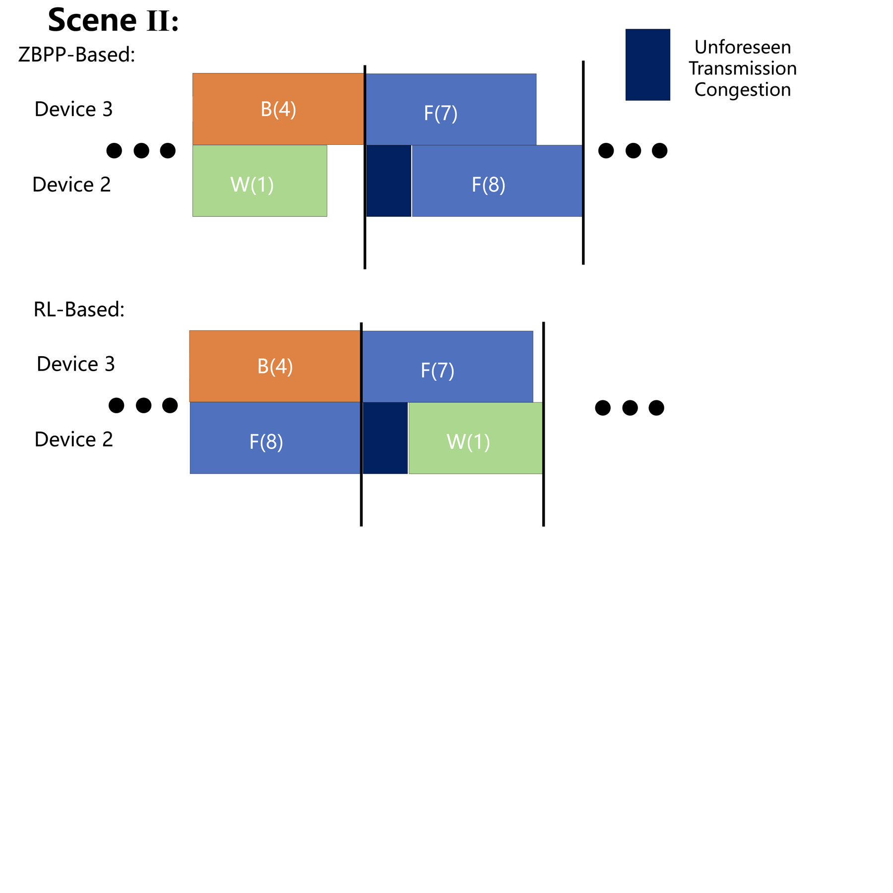

Pipeline parallelism is a fundamental pillar of large scale model training yet its efficiency is frequently constrained by straggler induced pipeline bubbles. This issue is exacerbated by static scheduling approaches including handcrafted heuristics and Integer Linear Programming which are inherently brittle when facing real world execution time variance. In this work we introduce Conductor which is a dynamic and two tiered scheduling framework designed to virtually eliminate straggler induced bubbles under realistic stochastic conditions. The key technical insight is to decouple global and long horizon scheduling from local and instantaneous load balancing. At a coarse grain a reinforcement learning agent leverages millisecond scale inference to generate robust global schedules and adapts to runtime dynamics in scenarios where traditional static solvers are computationally intractable. At a fine grain we introduce a dynamic computation migration mechanism that resolves residual micro bubbles by offloading sub computations such as attention heads from transiently slower workers to faster ones within a single timestep. Evaluated on large scale language model training configurations our framework outperforms state of the art static scheduling baselines by 5% to 14% in throughput and demonstrates superior resilience to injected system noise and execution variance.
Conductor responds to pipeline bubbles at two complementary scales: a learned global scheduler decides the ordering of feasible operations, while a local migration mechanism addresses residual imbalance within a slot.

A straggler sets the pace of a pipeline slot and leaves faster devices idle.

The learned global policy reorders feasible operations to better utilize pipeline slots.

Fine-grained migration balances a temporarily slower worker by redistributing an eligible MLP sub-computation.
Across the evaluated large-scale language model training configurations, Conductor improves throughput by 5% to 14% over the reported static scheduling baselines and remains resilient to injected system noise and execution variance.

Illustrative schedules for pure ZBPP ordering and RL-driven dynamic scheduling under the same pipeline configuration.

The policy adapts the ordering when an unexpected transmission congestion event affects an active slot.
@article{dong2027conductor,
title={Conductor: Dynamically Orchestrating Pipeline Parallelism with Multi-Granularity Control},
author={Dong, Xingbo and Liu, Ziyuan and Yang, Yuezhe and Lai, Yen-Lung and Jin, Zhe},
journal={Future Generation Computer Systems},
year={2027},
doi={10.1016/j.future.2026.108762}
}